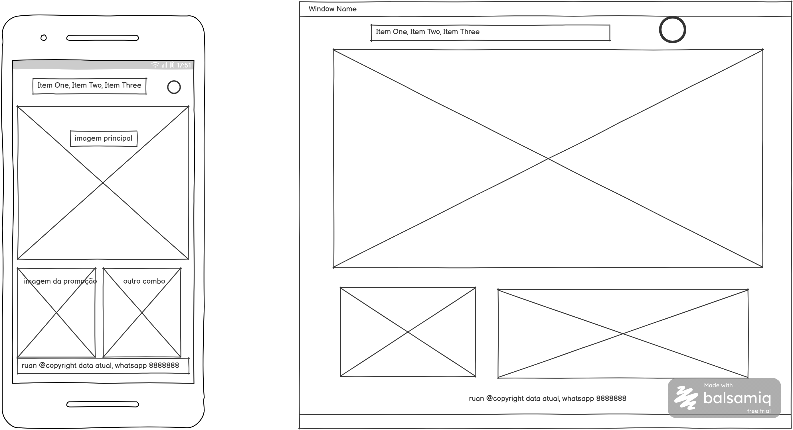

Hamburgueria Chique — Este nome foi escolhido para transmitir uma experiência gastronômica sofisticada, unindo o conceito de lanche rápido com alta qualidade culinária.
Domínio: hamburgueriachique.com.br
O site tem como objetivo apresentar a hamburgueria, sua localização, o cardápio completo, promoções exclusivas e informações de contato para atrair clientes e facilitar pedidos.
Vermelho (#D32F2F): Usado no cabeçalho, títulos principais e botões de destaque.
Amarelo Dourado (#FFC107): Usado para acentos, destaques de preços e detalhes visuais.
Branco/Cinza Claro (#F9F9F9): Cor de fundo geral do site.
Fonte principal: Roboto (Google Fonts) – Usada em todo o corpo do texto e parágrafos para garantir legibilidade.
Fonte de títulos: Poppins (Google Fonts) – Usada em todos os cabeçalhos (h1, h2, h3) para dar um aspecto moderno.
Abaixo estão os esboços do layout da página inicial para dispositivos móveis e computadores:
